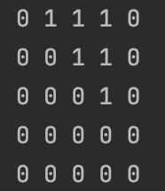

<meta charset="utf-8">
<html lang="ko">
<head>
    <link rel="stylesheet" type="text/css" href="./../style.css" />
    <title>백준 1613. 역사</title>
</head>
<body id="tt-body-page" class="">
<div id="wrap" class="wrap-right">
    <div id="container">
        <main class="main ">
            <div class="area-main">
                <div class="area-view">
                    <div class="article-header">
                        <div class="inner-article-header">
                            <div class="box-meta">
                                <h2 class="title-article">백준 1613. 역사</h2>
                                <div class="box-info">
                                    <p class="category">PS</p>
                                    <p class="date">2022-09-24 12:33:06</p>
                                </div>
                            </div>
                        </div>
                    </div>
                    <hr>
                    <div class="article-view">
                        <div class="contents_style">
                            <p data-ke-size="size16"><a href="https://www.acmicpc.net/problem/1613" target="_blank" rel="noopener">https://www.acmicpc.net/problem/1613</a></p>
<figure id="og_1663990030351" contenteditable="false" data-ke-type="opengraph" data-ke-align="alignCenter" data-og-type="website" data-og-title="1613번: 역사" data-og-description="첫째 줄에 첫 줄에 사건의 개수 n(400 이하의 자연수)과 알고 있는 사건의 전후 관계의 개수 k(50,000 이하의 자연수)가 주어진다. 다음 k줄에는 전후 관계를 알고 있는 두 사건의 번호가 주어진다. " data-og-host="www.acmicpc.net" data-og-source-url="https://www.acmicpc.net/problem/1613" data-og-url="https://www.acmicpc.net/problem/1613" data-og-image="https://scrap.kakaocdn.net/dn/eDF7os/hyPS1WfMeb/5uRPI08LH7ViTlANP2VOY1/img.png?width=2834&amp;height=1480&amp;face=0_0_2834_1480"><a href="https://www.acmicpc.net/problem/1613" target="_blank" rel="noopener" data-source-url="https://www.acmicpc.net/problem/1613">
<div class="og-image" style="background-image: url('https://scrap.kakaocdn.net/dn/eDF7os/hyPS1WfMeb/5uRPI08LH7ViTlANP2VOY1/img.png?width=2834&amp;height=1480&amp;face=0_0_2834_1480');">&nbsp;</div>
<div class="og-text">
<p class="og-title" data-ke-size="size16">1613번: 역사</p>
<p class="og-desc" data-ke-size="size16">첫째 줄에 첫 줄에 사건의 개수 n(400 이하의 자연수)과 알고 있는 사건의 전후 관계의 개수 k(50,000 이하의 자연수)가 주어진다. 다음 k줄에는 전후 관계를 알고 있는 두 사건의 번호가 주어진다.</p>
<p class="og-host" data-ke-size="size16">www.acmicpc.net</p>
</div>
</a></figure>
<p data-ke-size="size16">&nbsp;</p>
<p data-ke-size="size16">이 문제는 처음에 위상정렬 (topology sort) 인것 같았지만 좀 보다보니 얼마전에 풀었던<b> floyd warshall</b>을 이용한 문제와 거의 같은 문제 였다.&nbsp;</p>
<p data-ke-size="size16">&nbsp;</p>
<p data-ke-size="size16"><a href="https://tose33.tistory.com/885" target="_blank" rel="noopener">https://tose33.tistory.com/885</a></p>
<figure id="og_1663990106943" contenteditable="false" data-ke-type="opengraph" data-ke-align="alignCenter" data-og-type="article" data-og-title="백준 10159. 저울" data-og-description="https://www.acmicpc.net/problem/10159 10159번: 저울 첫 줄에는 물건의 개수 N 이 주어지고, 둘째 줄에는 미리 측정된 물건 쌍의 개수 M이 주어진다. 단, 5 &le; N &le; 100 이고, 0 &le; M &le; 2,000이다. 다음 M개의.." data-og-host="tose33.tistory.com" data-og-source-url="https://tose33.tistory.com/885" data-og-url="https://tose33.tistory.com/885" data-og-image="https://scrap.kakaocdn.net/dn/bKKg2W/hyPTUOKr6U/I1eFuItSLMe8cKkRayB0Ik/img.png?width=800&amp;height=800&amp;face=0_0_800_800,https://scrap.kakaocdn.net/dn/bXpvL1/hyPTXkomLS/rkozr5e6KJLKZwxHtZ4q2K/img.png?width=800&amp;height=800&amp;face=0_0_800_800"><a href="https://tose33.tistory.com/885" target="_blank" rel="noopener" data-source-url="https://tose33.tistory.com/885">
<div class="og-image" style="background-image: url('https://scrap.kakaocdn.net/dn/bKKg2W/hyPTUOKr6U/I1eFuItSLMe8cKkRayB0Ik/img.png?width=800&amp;height=800&amp;face=0_0_800_800,https://scrap.kakaocdn.net/dn/bXpvL1/hyPTXkomLS/rkozr5e6KJLKZwxHtZ4q2K/img.png?width=800&amp;height=800&amp;face=0_0_800_800');">&nbsp;</div>
<div class="og-text">
<p class="og-title" data-ke-size="size16">백준 10159. 저울</p>
<p class="og-desc" data-ke-size="size16">https://www.acmicpc.net/problem/10159 10159번: 저울 첫 줄에는 물건의 개수 N 이 주어지고, 둘째 줄에는 미리 측정된 물건 쌍의 개수 M이 주어진다. 단, 5 &le; N &le; 100 이고, 0 &le; M &le; 2,000이다. 다음 M개의..</p>
<p class="og-host" data-ke-size="size16">tose33.tistory.com</p>
</div>
</a></figure>
<p data-ke-size="size16">10159. 저울 문제랑 거의 똑같은 문제다.&nbsp;</p>
<p data-ke-size="size16">&nbsp;</p>
<p data-ke-size="size16">다른점이라면 두 노드의 순서를 파악해야 하는 점인데 다음은 예제를 floyd warshall을 돌린 결과다&nbsp;</p>
<p data-ke-size="size16">&nbsp;</p>
<p><figure class="imageblock alignLeft" >
    <span data-lightbox="lightbox">
        
    </span>
    <figcaption></figcaption>
</figure></p>
<p data-ke-size="size16"><b>노드 1과 5의 관계</b>를 생각해보자.</p>
<p data-ke-size="size16">위 결과를 보면 [1][5] = flase 이고 [5][1] = false 이다.&nbsp;</p>
<p data-ke-size="size16">즉 노드 1과 5는 서로 연결되지 않았음을 알수 있다.&nbsp;</p>
<p data-ke-size="size16">&nbsp;</p>
<p data-ke-size="size16"><b>노드 2와 4의 관계</b>를 생각해보자.</p>
<p data-ke-size="size16">[2][4] = true, [4][2] = false 이다.</p>
<p data-ke-size="size16">따라서 노드 2 이후에 4가 나타난다는 것을 알 수 있다.&nbsp;</p>
<p data-ke-size="size16">&nbsp;</p>
<p data-ke-size="size16"><b>노드 3과 1의 관계</b>를 생각해보자.</p>
<p data-ke-size="size16">[3][1] = false, [1][3] = true 이다.</p>
<p data-ke-size="size16">따라서 노드 1 이후 3이 나타난다.</p>
<p data-ke-size="size16">&nbsp;</p>
<p data-ke-size="size16">&nbsp;</p>
<script src="https://gist.github.com/LSH3333/2fc7f6f613b66fee5c4195bc290419ab.js"></script>
<p data-ke-size="size16">&nbsp;</p>
                        </div>
                        <br/>
                        <div class="tags">
                            #floyd warshall 
                        </div>
                    </div>
                </div>
            </div>
        </main>
    </div>
</div>
</body>
</html>
